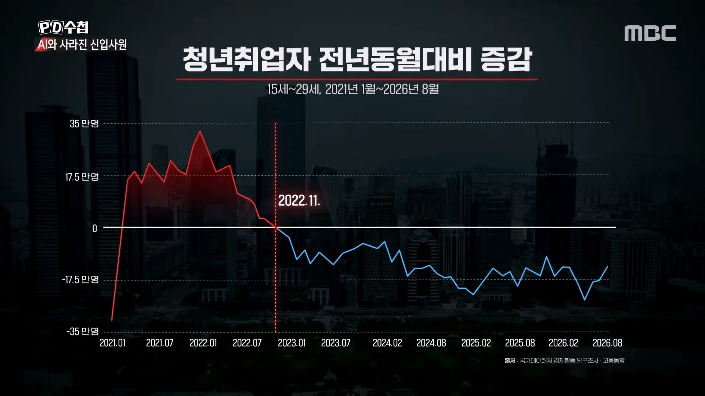
2022년 11월 챗 GPT가 처음 등장한 시기인데
그 시점을 기점으로 취업률이 감소하기 시작 함
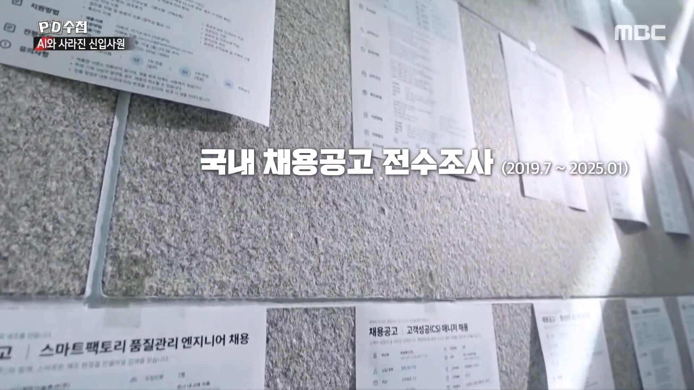
PD수첩은 전문가들과 함께
한 채용사이트에 올라온 공고를 AI로 분석 함
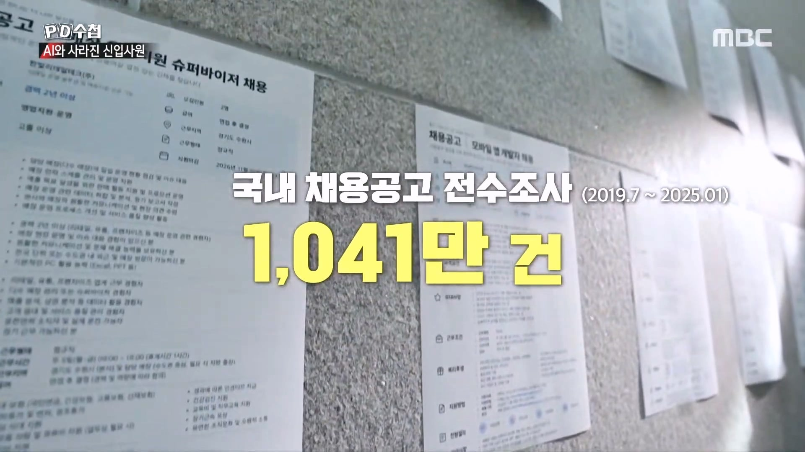
1,000만 건을 분석 함
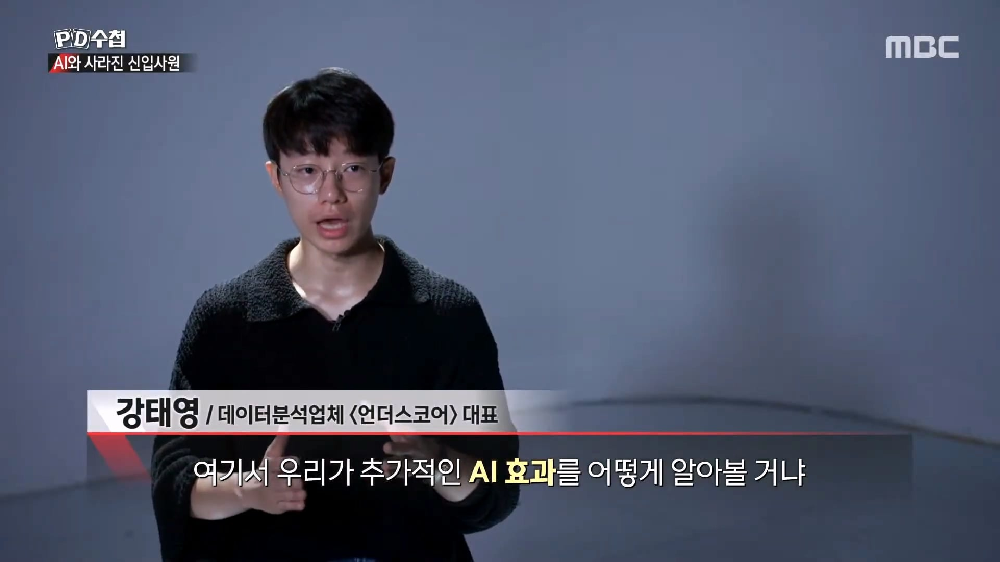
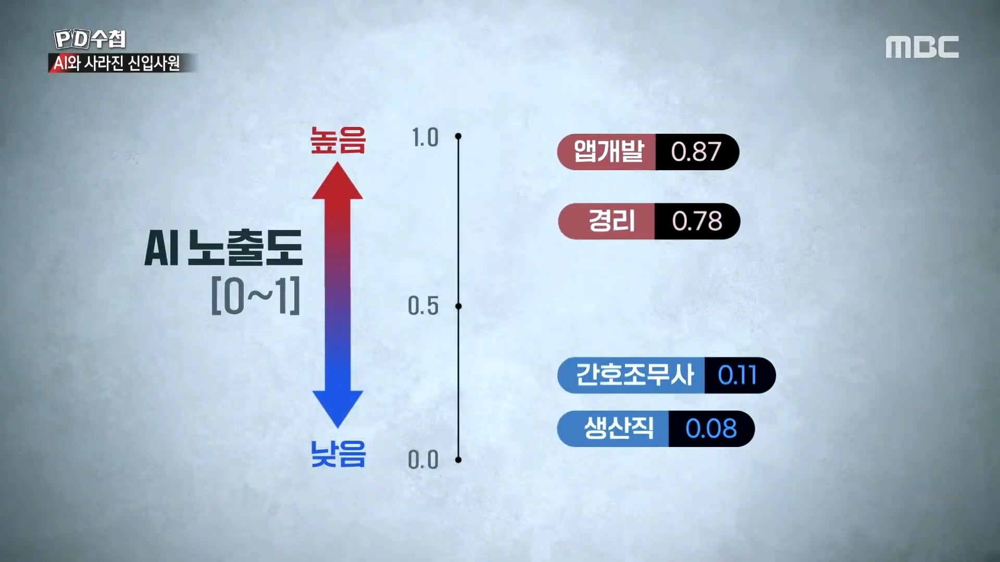
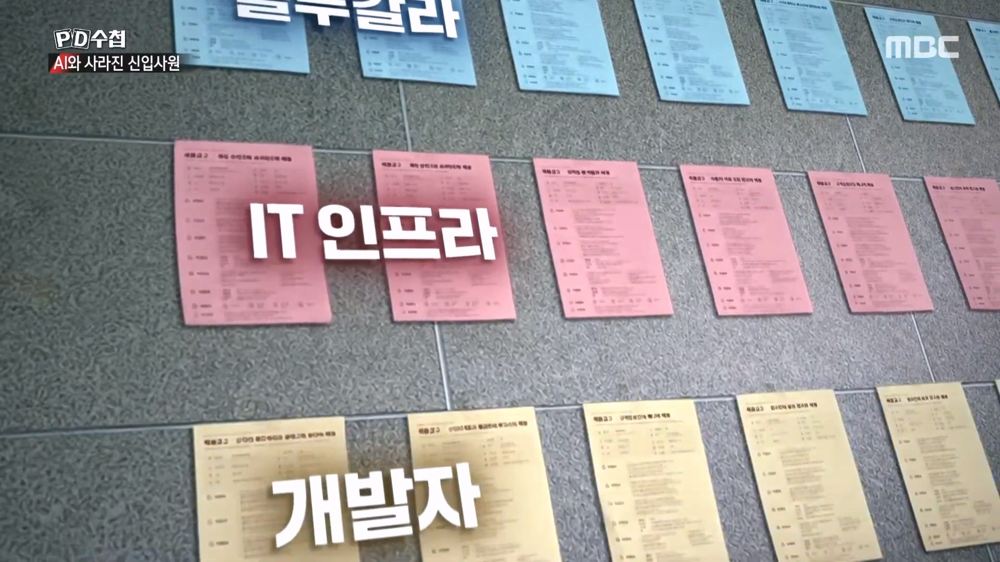
현장에서 직접 몸을 움직이는 블루칼라 직종
AI 대체 가능성이 낮음
앱개발, IT 업무는 AI의 영향을 크게 받는 중
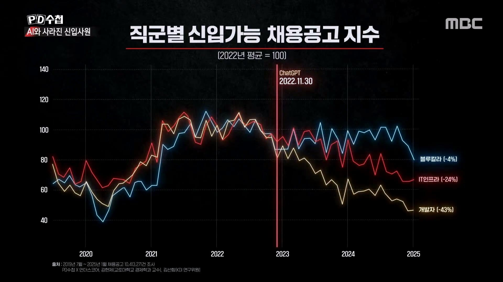
AI 노출도에 따라 채용공고를 분석 함
블루칼라 직종은 신입 채용공고 유지
영향을 많이 받는 직군은 채용공고 감소
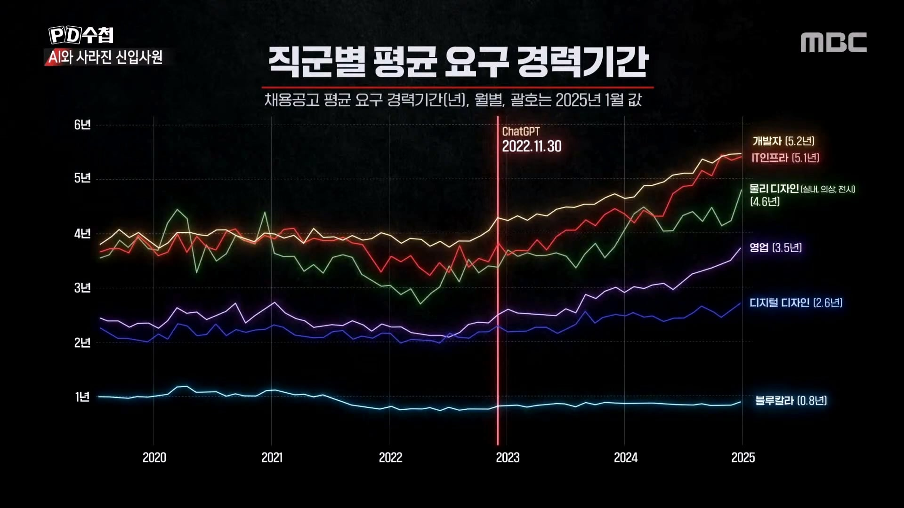
또 다른 결과도 나왔는데
블루칼라 직종은 요구 경력기간 변화 거의 없음
영향을 많이 받는 직종은 이전보다 많은 경력을
요구 하는 중
즉 신입 채용은 줄어들고 경력자를 선호하는 경향이
강해지고 있음
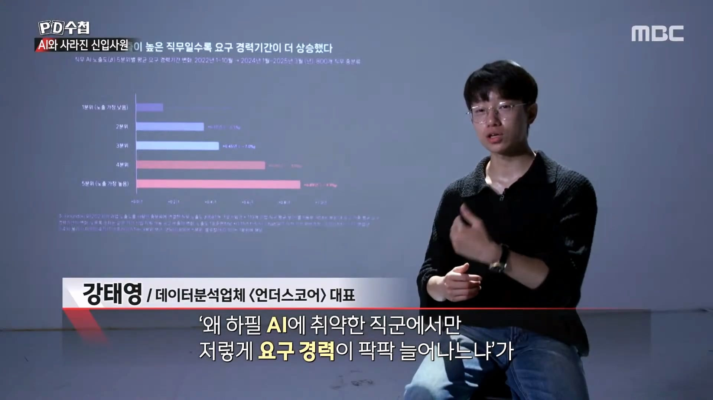
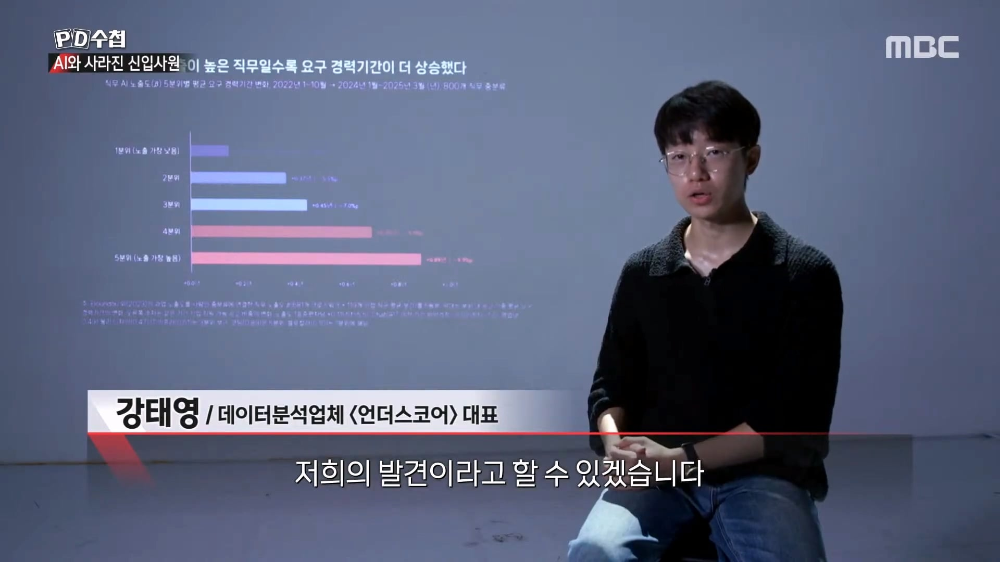
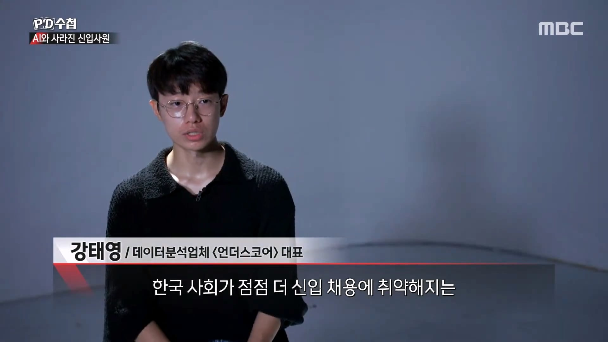
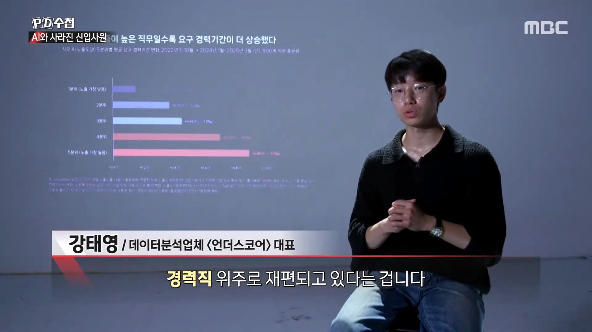
현재 한국의 채용 시장은
경력직 위주로 재편되고 있는 상황이라고 함
익명의 제보인데
대기업에서도 신입 채용하지말라는
분위기라고 함
PD수첩 10월20일 AI 딜레마 2부
신입사원 실종사건
댓글
수집 당시 댓글 11개
· 고추건조기 · 1 시간 전
뿌뿌룰루 · 2 시간 전
본인들도 채용공고 올라온걸 사람이 분석 안하고 AI한테 분석시키는데머..
놀고싶다 · 2 시간 전
순서 차이일 뿐이지 블루칼라도 거의 다 대체 된다던데...
무도콘만씀 · 1 시간 전
초양극화 사이버펑크로 가는구나
마루쉐 · 1 시간 전
신입 시장 ㅈ댄거 맞고 주니어 이상이나 시니어도 곧 영향이 있을텐데 아직까진 사람이 필요하다 AI 쓰는건 가짜 개발자다 실력 없는 애들이나 걱정이다 하는 쿨찐들 뒤지게 많던데 이런 글 올라오면
지가 예술 작품을 만들어내는줄 알아ㅋㅋ현직에선 다 걱정중인데
천사들의변혁 · 1 시간 전
사람이 책임을 져야하는곳만 남을듯
zensation2 · 1 시간 전
it쪽 시니어들도 곡소리나던데 경력직? 대체 누굴뽑는다는거지
· 스필반12 · 1 시간 전
it 쪽도 업무 분야가 워낙 다양해서 시니어가 곡소리 날 정도면 웹이나 디자인계열 처럼 예전부터 사람 구하기 쉬운 쪽 일 가능성이 큼
ma가야로 · 1 시간 전
메트릭스 세계관이면 그나마 다행일 수준이 올지도 모르겠네...
hans · 48 분 전
개발이 소프트웨어 개발을 말하는건가?
자동차쪽 r&d 하는데 여기는 사람 없어서 곡소리 나는데..
· 디저트88 · 8 분 전
나도 건축설계하는데 신입들 잘안들어온다 힘들다고ㅋㅋ
최근에 3명들어왔는데 그만두지말라고 매일 칼퇴근시키고 야근은 선배들만함ㅋㅋ